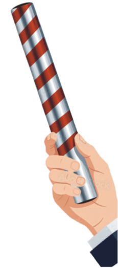
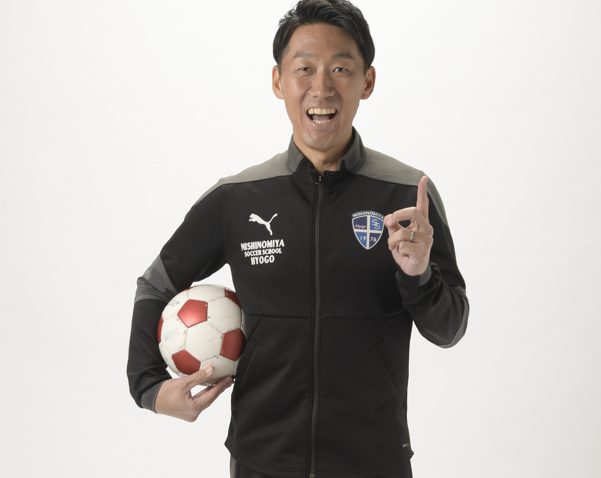
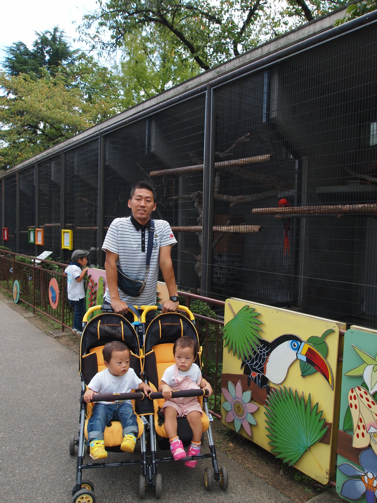

画一化
多様性
点数や偏差値を追い求め、子どもを同じ形にはめ込む教育ではなく、 一人ひとりの個性や可能性を大切にする教育へ。
アクション
- 少人数学級の拡充
- 不登校支援の強化
- 探究学習・起業家教育
- オーガニック給食など食育の推進
- 多様な学びの選択肢の充実
- 子ども食堂など、子どもや保護者への支援
垂水からバトンを繋ぐ
教室から議会へ。元教師・中村ちからは、子どもたちの笑顔を守れる社会と、 誰一人取り残さないまちを垂水からつくるために挑戦します。

私は夢にまで見た教員の道を離れ、政治に挑戦します。
今の学校や子育てを取り巻く環境は、現場の努力だけでは変えられない課題が広がっています。 その現実を変えるには政治の力が必要です。
だから私は、教室から議会へ踏み出し、子どもたちの笑顔を守れる社会を実現し、 誰一人取り残さないまちを垂水からつくります。
でも、それは私一人ではできません。一人ひとりの“ちから”が必要です。 対話を通してあなたの声を“ちから”に変え、次の世代が希望を持てる社会を実現します。
中村ちからの政策を見る子どもたちと向き合ってきた時間を、これからの垂水のまちづくりへ。 過去と現在をつなぎ、次の世代へ希望のバトンを渡していきます。


垂水とトモニ
将来への不安を感じる人が増えている今だからこそ、子育てや仕事、 老後の暮らしに安心を感じられる社会をつくりたい。
誰かが困っているときに「おたがいさま」と支え合えるまち。 安心や希望を感じ、誰もが挑戦できるまち。 人にやさしく、人が輝くまちを、垂水からつくりたい。
この挑戦を支える中村ちからの政策。対話で受け取った声を、垂水の暮らしを支える具体的な行動へ変えていきます。
点数や偏差値を追い求め、子どもを同じ形にはめ込む教育ではなく、 一人ひとりの個性や可能性を大切にする教育へ。
子どもも高齢者も、障がいのある人もない人も、誰もが安心して暮らし、 共に支え合い、自分らしく輝ける共生のまちへ。
地元で働き、地元で買い、地域で支え合う。 人とお金が地域で循環する、持続可能で元気な垂水へ。
「政治は難しい」「自分には関係ない」ではなく、 誰もが声を届け、対話しながらまちをつくれる垂水へ。

恩師・松浦先生と出逢う。“マラソン大会ズル休み事件”をきっかけに、 先生の向き合い方に心を動かされ、将来は絶対に教師になると決意。

教員になることだけを夢見て、隙あらば神戸市の小学校でのボランティア活動に勤しむ。 その時に出会った素晴らしい先生方に憧れ、「絶対神戸で働く！」という強い意志のもと、 採用試験は神戸だけを受験。無事に合格！！
休み時間も放課後も全力で子どもたちと遊び、家庭訪問では“いかなご”の差し入れを山ほどいただくことも(笑) 外部の勉強会や教職委員会にも積極的に参加。様々な経験を通して自ら学ぶことを大切に、“教育”と向き合い続ける。 神戸市立小学校で教師として19年間勤務。

教員の働き方改革により、教育現場の良さが失われていく現実を見過ごすことができず、 苦渋の決断の末、教員を辞めて政治の世界へ飛び込むことを決意。 教員・子どもたちの未来を守る為、現場のリアルな声を政策に届けていく。


息子がきっかけでサッカーチームのコーチを務め、全国大会出場を果たす。


長男・次男＆長女(双子)に恵まれ、子育てに奮闘。

グランプリ受賞

2025年12月、オーガニック給食先進国：韓国へ視察。
子どもたちのため、働く仲間のために、中村ちからさんは活動しています。 垂水区のみなさんの声を届ける挑戦を、あなたの“ちから”で支えてください。
後援会加入フォームへ
子どもたちのため、働く仲間のために、中村ちからさんは活動しています。神戸市垂水区のみなさんの声を届けましょう！
みずおか 俊一 立憲民主党代表代行 参議院議員
常に市民目線で笑顔な中村さん！培った現場経験で地域課題を積極的に解決してくれること間違いないでしょう。
井坂 信彦 前衆議院議員
中村ちからさんは、信頼できる人です。市民、県民のために、是非とも一緒に働きたいです。
黒田 一美 兵庫県議会議員（垂水区）